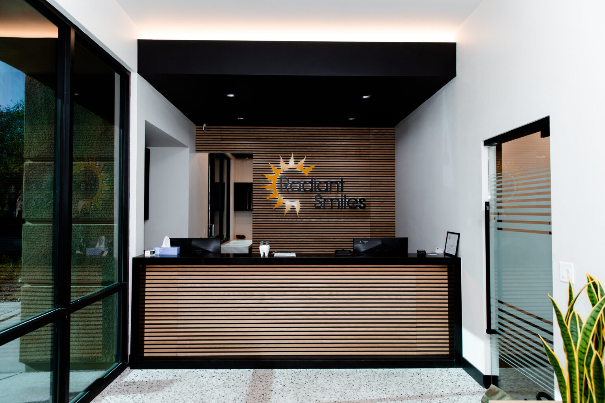
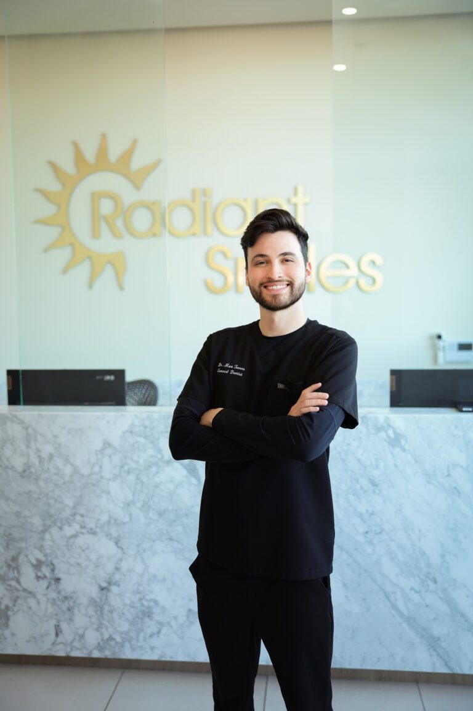

<style>
/* ============================================================================
   T-HUB CONCEPT C - "THE SHOWROOM"
   Body-fragment scoped layer. Sits ON TOP of radiantsmiles-tokens.css,
   radiantsmiles-chrome.css and radiantsmiles-structural.css (which now also
   carries the promoted T-FEATURE layer as its section 7). It adds only the
   shapes this concept needs that the foundation kit does not already ship.

   NAMESPACE: hb-* (hub). The cc-* prefix is OWNED by the promoted T-FEATURE
   template and its rules are live in the linked structural sheet, so every class
   invented here is hb-*. The only shared names touched are .container--full
   (declared below, because the foundation declares .container / .row / .col as
   inert layout pass-throughs but NOT that modifier) and descendant-scoped
   .rs-frame rules inside an hb-* block, which modify the base frame exactly
   where this concept intends and nowhere else.

   THE THESIS, in CSS terms: the photograph is the largest object in every beat
   it appears in, and NOTHING on this page sets type over a photograph. There is
   no scrim anywhere in this file. The copy is set beside, beneath or against the
   frames, never on them, so a clinical room is never graded down into atmosphere
   in order to make a headline legible.

   TOKEN PURITY: zero hex literals. Every colour, radius, shadow, duration and
   space value below is a var(--ds-*) role token, or a raw length on a property
   the token vocabulary does not own (font-size, aspect-ratio, track sizing).

   RESPONSIVE POLICY: authored DESKTOP FIRST. Every breakpoint rule here is an
   ADDITIVE @media (max-width:N) override, never a min-width one, so nothing can
   strand a layout above its own breakpoint.

   THE SPECIFICITY NOTE, recorded rather than discovered later: the foundation
   declares p.rs-copy at (0,1,1) with max-width:64ch. NO measure is set anywhere
   in this file on an element that also carries rs-copy. The three elements that
   DO carry a measure (hb-argue__lead, hb-proof__lead, hb-close__line) carry NO
   rs-copy class, and each of those selectors is type-qualified anyway, so it is
   (0,1,1) and sits after the linked sheets in source order. Confirmed with
   getComputedStyle in the browser, not by reading this comment.

   ONE NOTATION ODDITY, explained rather than left looking like a typo: the
   selection ledger writes the hero citation as "# 18", with a space after the
   hash. The client banned-vocab list bans a superlative that is spelled as a
   hash followed immediately by the digit one, and block-banned-content.mjs
   tests it as a bare SUBSTRING rather than as a whole word, so a closed-up
   eighteen citation is refused at write time. The ledger gate parses hash then
   optional space then the number, so the spaced form cites the same real entry.
   ============================================================================ */

/* ---- shared -------------------------------------------------------------- */
/* the sanctioned full-bleed container modifier. Declared here because the
   foundation ships .container / .row / .col as layout-only pass-throughs and
   never declares this one. It releases the chrome sheet's max-width and inline
   padding for a single band, and does nothing else. */
.container--full{max-width:none;padding-inline:0;}

/* the page-ground texture. Applied ONLY to light sections: .surface-dark paints
   its ground as a gradient background-IMAGE, so a texture class on the same
   element would silently erase it and leave the band dark by class name only. */
.hb-tex{background-image:var(--ds-grid);background-size:var(--ds-grid-size);}

/* the inline figure. A cited number is promoted typographically INSIDE the
   sentence that qualifies it, so it never travels away from its subject, its
   source or its fetch date. */
.hb-fig{
  font-family:var(--ds-font-display);
  font-weight:700;
  font-size:1.14em;
  letter-spacing:-.012em;
  color:var(--ds-ink);
  font-variant-numeric:tabular-nums;
  white-space:nowrap;
}

/* ---- 1 . THE HERO WALL. Three real frames, copy in the negative space. ---- */
.hb-wall{
  display:grid;
  grid-template-columns:minmax(0,1fr) minmax(0,.86fr) minmax(0,1.34fr);
  grid-template-rows:auto clamp(150px,14vw,206px);
  grid-template-areas:"copy copy lead" "a b lead";
  gap:var(--ds-space-md);
  align-items:stretch;
}
/* the copy sits BARE on the band ground, with no card chrome, so the frames are
   the only objects in the opening move. */
.hb-wall__copy{
  grid-area:copy;
  display:flex;
  flex-direction:column;
  justify-content:center;
  align-items:flex-start;
  gap:var(--ds-space-md);
  min-width:0;
}
.hb-wall__lead{grid-area:lead;width:100%;min-width:0;height:100%;}
.hb-wall__a{grid-area:a;width:100%;min-width:0;height:100%;}
.hb-wall__b{grid-area:b;width:100%;min-width:0;height:100%;}
/* the anchor strip. Six routes, stated once at the top and again as the wall. */
.hb-anchors{
  display:flex;
  flex-wrap:wrap;
  align-items:center;
  gap:var(--ds-space-xs);
  margin-top:var(--ds-space-lg);
}
/* the inclusion line from section 1 of the copy. It sits UNDER the strip rather
   than inside the copy tile on purpose: in the tile it becomes a fourth block
   and pushes the second action past the fold, which is the exact failure the
   hero pick is defended against. */
.hb-included{margin-top:var(--ds-space-sm);}
@media (max-width:1023px){
  .hb-wall{
    grid-template-columns:minmax(0,1fr) minmax(0,1fr);
    grid-template-areas:"copy copy" "lead lead" "a b";
    grid-template-rows:auto auto clamp(150px,22vw,230px);
  }
  /* the lead frame leaves its two-row track here, so it takes a ratio instead of
     a stretched height. Without this it would resolve height:100% against an
     auto row and collapse to zero. */
  .hb-wall__lead{height:auto;aspect-ratio:16 / 10;}
}
@media (max-width:599px){
  .hb-wall{
    grid-template-columns:minmax(0,1fr);
    grid-template-areas:"copy" "lead" "a" "b";
    grid-template-rows:auto;
  }
  .hb-wall__a,.hb-wall__b{height:auto;aspect-ratio:16 / 10;}
}

/* ---- 2 . THE FULL-BLEED BAND + THE ARGUMENT BENEATH IT -------------------- */
.hb-band{
  position:relative;
  overflow:hidden;
  width:100%;
  aspect-ratio:16 / 6;
}
.hb-band img{
  width:100%;
  height:100%;
  object-fit:cover;
  /* pulled below centre so the crop lands on the desk and the sign rather than
     on the ceiling, which is what the alt text names. */
  object-position:50% 58%;
  filter:saturate(.94) contrast(1.04);
}
.hb-argue{
  display:grid;
  grid-template-columns:minmax(0,1.06fr) minmax(0,.94fr);
  gap:var(--ds-space-xl);
  align-items:start;
  margin-top:var(--rs-sec-pad);
}
/* the opening statement is the section's focal object: display face, one step
   under the h2 scale, so the eye enters at the top and never hunts. */
p.hb-argue__lead{
  font-family:var(--ds-font-display);
  font-size:clamp(24px,2.7vw,34px);
  line-height:1.28;
  letter-spacing:-.016em;
  font-weight:600;
  color:var(--ds-ink-heading);
  max-width:30ch;
}
.hb-argue__rest{
  display:flex;
  flex-direction:column;
  gap:var(--ds-space-md);
  border-left:3px solid var(--rs-rule);
  padding-left:var(--ds-space-lg);
}
@media (max-width:1023px){
  .hb-argue{grid-template-columns:minmax(0,1fr);gap:var(--ds-space-lg);}
}
@media (max-width:767px){
  .hb-band{aspect-ratio:16 / 10;}
  .hb-argue__rest{padding-left:var(--ds-space-md);}
}

/* ---- 3 . THE DOOR WALL. Seven frames at three spans, on the dark ground. -- */
.hb-doors{
  display:grid;
  grid-template-columns:repeat(6,minmax(0,1fr));
  gap:var(--ds-space-md);
}
.hb-door{grid-column:span 2;}
.hb-door--wide{grid-column:span 3;}
.hb-door--broad{grid-column:span 4;}
/* the frame is flush to the card edge (the foundation's .rs-card--media already
   clips the card and zeroes the frame radius); only the RATIO varies with span,
   which is what makes the section read as a wall and not a table of equal boxes. */
.hb-door__frame{aspect-ratio:4 / 3;}
.hb-door--wide .hb-door__frame{aspect-ratio:3 / 2;}
.hb-door--broad .hb-door__frame{aspect-ratio:16 / 9;}
/* the route IS the title. One element carries the block's name and its
   destination, so no card repeats its own heading again as a second link line. */
a.hb-door__link{
  display:inline-flex;
  align-items:center;
  gap:var(--ds-space-xs);
  min-height:48px;
  text-decoration:none;
  color:var(--ds-ink-heading);
}
a.hb-door__link svg{flex:none;transition:transform var(--ds-dur) var(--ds-ease-out);}
.rs-card:hover a.hb-door__link svg{transform:translateX(4px);}
@media (max-width:1023px){
  .hb-doors{grid-template-columns:repeat(4,minmax(0,1fr));}
  .hb-door--wide,.hb-door--broad{grid-column:span 4;}
}
@media (max-width:639px){
  .hb-doors{grid-template-columns:minmax(0,1fr);}
  .hb-door,.hb-door--wide,.hb-door--broad{grid-column:auto;}
  .hb-door__frame,
  .hb-door--wide .hb-door__frame,
  .hb-door--broad .hb-door__frame{aspect-ratio:16 / 10;}
}

/* ---- 4 . THE RECORD, SET BESIDE A ROOM ----------------------------------- */
.hb-proof{
  display:grid;
  grid-template-columns:minmax(0,1.08fr) minmax(0,.92fr);
  gap:var(--ds-space-xl);
  align-items:center;
}
.hb-proof__copy{display:flex;flex-direction:column;gap:var(--ds-space-md);min-width:0;}
p.hb-proof__lead{
  font-family:var(--ds-font-display);
  font-size:clamp(25px,3vw,36px);
  line-height:1.26;
  letter-spacing:-.018em;
  font-weight:600;
  color:var(--ds-ink-heading);
  max-width:22ch;
}
/* the consequence sits under a hairline as its own beat, so the sentence that
   follows the figure can never be read as part of the figure. */
p.hb-proof__note{padding-top:var(--ds-space-md);border-top:1px solid var(--ds-line);}
.hb-proof__media{width:100%;min-width:0;}
.hb-proof__frame{aspect-ratio:4 / 5;}
@media (max-width:1023px){
  .hb-proof{grid-template-columns:minmax(0,1fr);gap:var(--ds-space-lg);}
  .hb-proof__frame{aspect-ratio:16 / 10;}
}

/* ---- 5 . THE INDEX STRIP. The page's shortest section, grounded. ---------- */
.hb-strip{padding-block:var(--ds-space-lg);}
/* two GROUPS stacked, not one wrapping row. Rendered as a single flex row the
   second lead-in word landed mid-line after the fourth chip, which muddled the
   two groups the copy states as two lines. */
.hb-rail{display:flex;flex-direction:column;gap:var(--ds-space-md);}
.hb-rail__grp{display:flex;flex-wrap:wrap;align-items:center;gap:var(--ds-space-xs) var(--ds-space-sm);}
.hb-rail__k{
  font-family:var(--ds-font-display);
  font-size:19px;
  line-height:1.4;
  font-weight:600;
  color:var(--ds-ink-heading);
  flex:none;
}
/* a chip must not stretch to fill its flex line: these are seven separate
   destinations, not a segmented control. */
.hb-rail-item{flex:none;}

/* ---- 6 . THE DIRECTORY BOARD --------------------------------------------- */
.hb-board{
  display:grid;
  grid-template-columns:minmax(0,1.3fr) minmax(0,.7fr);
  gap:var(--ds-space-xl);
  align-items:start;
}
/* the foundation holds .rs-h2 to 20ch at (0,1,0), which broke this heading after
   "nearest" and orphaned "you." on a line of its own. Type-qualified to (0,1,1)
   and widened just enough to keep the sentence whole; the cascade take is
   deliberate and was confirmed with getComputedStyle, not assumed. */
h2.hb-board__h{max-width:30ch;}
.hb-board__list{border-top:1px solid var(--ds-line);}
.hb-stop-item{
  display:flex;
  flex-wrap:wrap;
  align-items:center;
  justify-content:space-between;
  gap:var(--ds-space-2xs) var(--ds-space-md);
  padding-block:var(--ds-space-2xs);
  border-bottom:1px solid var(--ds-line);
}
/* the office name is the row's only link and it was rendering 25px tall, under
   the foundation's own 48px target floor (measured in the browser, not assumed).
   The row's block padding is traded for the link's own min-height so the row
   grows by 3px rather than by 48. */
a.hb-stop__name{display:inline-flex;align-items:center;min-height:48px;}
.hb-board__media{width:100%;min-width:0;}
.hb-board__frame{aspect-ratio:4 / 5;}
@media (max-width:1023px){
  .hb-board{grid-template-columns:minmax(0,1fr);gap:var(--ds-space-lg);}
  .hb-board__frame{aspect-ratio:16 / 10;}
}

/* ---- 7 . THE CLOSE. No photograph, no grid, one ask. --------------------- */
.hb-close{
  display:flex;
  flex-direction:column;
  align-items:center;
  text-align:center;
  gap:var(--ds-space-lg);
  max-width:50rem;
  margin-inline:auto;
}
p.hb-close__line{
  font-family:var(--ds-font-display);
  font-size:clamp(27px,3.4vw,42px);
  line-height:1.24;
  letter-spacing:-.02em;
  font-weight:600;
  color:var(--ds-ink-heading);
  max-width:31ch;
}
/* on the dark ground the accent is a genuine foreground (7.19:1 on the worst
   stop), which is why the page's one deliberate accent mark is spent here. */
.hb-close__rule{
  width:var(--ds-space-xl);
  height:2px;
  border-radius:var(--ds-r-pill);
  background:var(--ds-accent);
}
</style>

<!-- pick: HERO-COMPOSITIONS.md # 18 Asymmetric grid hero (irregular tiles) | considered: #21,#9 | why: this concept spends the practice's own photography, so its opening move has to be a WALL of it rather than one framed picture set beside a headline. Entry 18 is the only hero in the catalog built as an irregular tile grid, which is what lets three real frames of three different rooms sit at three different scales inside a single move, and its own grid-template-areas hook is exactly the two-row a a b over c d b shape used here. The DEVIATION is deliberate and it IS the pick: the entry puts the hero TEXT in the large tile, and this build inverts the weighting so the single largest object in the opening is a photograph. MEASURED at 1440 by 900, not estimated: the lead frame is 454 by 681 and the copy region is 654 by 455, so the photograph is the biggest single object in the wall, and the three frames together take 436,000 square pixels against 298,000 for the copy. The copy sits bare on the band ground rather than in a card, so nothing competes with the frames. #21 Mosaic collage was the closer call and is rejected on two measured counts: its own structure line puts the headline OVERLAID on the collage, which is the family the brief rules out because a scrim heavy enough to carry type over a clinical room grades the room into atmosphere, and its stated five to eight tiles at this container width would run every frame under 300px wide, which is the opposite of photography leading at scale. #9 Cinematic letterbox is rejected because a 16 by 5 band held at 50vh pushes the H1 and both actions past the fold at 1440, and this template is inherited by ten hub pages whose entire job is routing, so the routes cannot begin below the fold. THE FOLD, measured on the rendered page rather than reasoned about: the chrome header is 165px, the H1 starts at 377, and the second action closes at 681, all inside a 900px viewport. rigor: heavy -->
<section class="rs-sec rs-sec--band rs-sec--lead hb-tex">
  <div class="container">
    <div class="row">
      <div class="col">

        <div class="hb-wall">

          <div class="hb-wall__copy">
            <h1 class="rs-h1">Dental Services in Las Vegas</h1>
            <p class="rs-lede">Six areas of care, all delivered in house at all seven offices. Start with the problem you have, not the clinical name for it.</p>
            <!-- CTA-PATTERNS.md #7 multi-CTA cluster, carried verbatim from section 1 of the copy.
                 The secondary act routes to the offices page, never to a number: the phone policy
                 resolves the call to a specific office's own line and a hub cannot choose one. -->
            <div class="rs-acts">
              <a class="rs-btn rs-btn--accent" href="contact.html">Book an appointment</a>
              <a class="rs-btn rs-btn--ghost" href="locations.html">Call the office</a>
            </div>
          </div>

          <div class="rs-frame rs-frame--hero hb-wall__lead">
            
            <span class="rs-grade rs-grade--soft" aria-hidden="true"></span>
          </div>

          <div class="rs-frame hb-wall__a">
            
            <span class="rs-grade rs-grade--soft" aria-hidden="true"></span>
          </div>

          <div class="rs-frame hb-wall__b">
            
            <span class="rs-grade rs-grade--soft" aria-hidden="true"></span>
          </div>

        </div>

        <!-- the anchor strip, carried verbatim from section 1 of the copy. Every label is the
             name of a page that exists in sitemap.yaml, so the strip routes rather than jumps. -->
        <div class="hb-anchors">
          <a class="rs-chip" href="general-dentistry.html">General dentistry</a>
          <a class="rs-chip" href="cosmetic-dentistry.html">Cosmetic dentistry</a>
          <a class="rs-chip" href="restorations.html">Restorations</a>
          <a class="rs-chip" href="oral-surgery.html">Oral surgery</a>
          <a class="rs-chip" href="periodontics.html">Periodontics</a>
          <a class="rs-chip" href="orthodontics.html">Orthodontics</a>
        </div>

        <p class="rs-meta hb-included"><strong class="rs-strong">Included under general dentistry:</strong> exams, cleanings, preventative care, digital X-rays, fluoride and sealants.</p>

      </div>
    </div>
  </div>
</section>

<!-- pick: SECTION-COMPONENTS.md #58 Image divider full-bleed | considered: #8,#7 | why: the argument in this passage is that a practice is either one place or a chain of handoffs, and the cheapest way to lose that argument is to illustrate it with a diagram. #58 is the catalog's only entry whose stated ROLE is a large image acting as the section transition itself, and it is the pick because this concept's claim is that the rooms ARE the evidence: an edge-to-edge frame of our own front desk, ungraded, with no type over it, states the thing the prose then explains. The .container--full modifier is declared in this fragment's style block because the foundation ships .container, .row and .col as inert pass-throughs and never declares the full-bleed variant. DEVIATION from #58, declared: the entry is written as an image standing alone, and here the section's three fixed paragraphs land beneath the band in a two-column measure, because this beat's copy cannot be moved to a neighbouring section. #8 Manifesto is rejected because a manifesto states a belief and this passage states a mechanism, and belief register on a regulated health page is exactly the substitution this rewrite exists to remove. #7 Problem framing is rejected because it is a copy-shaped slot with an optional supporting image, which would have made the photograph the servant of the paragraph, inverting this concept's thesis and landing on the same split the sibling concepts are likely to be showing. rigor: heavy -->
<section class="rs-sec">

  <div class="container container--full">
    <div class="row">
      <div class="col">
        <div class="hb-band">
          
          <span class="rs-grade rs-grade--soft" aria-hidden="true"></span>
        </div>
      </div>
    </div>
  </div>

  <div class="container">
    <div class="row">
      <div class="col">
        <div class="hb-argue">
          <p class="hb-argue__lead">Where dental care is split across separate businesses, one office handles the checkup. The specialist work goes somewhere else.</p>
          <div class="hb-argue__rest">
            <p class="rs-copy">That handoff costs you time. You repeat your history to a stranger at a business with no connection to the first.</p>
            <p class="rs-copy">We do all six areas in house, at our own offices, with named clinicians on one roster. That is one practice with one roster, not a referral network that hands you on.</p>
          </div>
        </div>
      </div>
    </div>
  </div>

</section>

<!-- pick: SECTION-COMPONENTS.md #43 Gallery grid | considered: #9,#42 | why: this is the beat the whole page exists for, seven routes into the practice's care, and it is where this concept either spends its photography or admits the photography was decoration. #43 is the image-led gallery without filters, and its masonry option is what lets seven tiles run at three different spans, so the section reads as a wall and never as a table of equal boxes: two wide frames, four standard, and one broad tile for the route a reader takes when they cannot name the problem. Each tile is the stacked variant of the CARD-VARIATIONS article-preview card (entry 17), photograph flush to the card edge at the top with the plate beneath it, which is the one card shape that puts a real frame at real scale with NO type set over it. The section takes the page's first surface-dark ground for a reason specific to this library: every usable frame is a light room shot on a light ground, and the deep ground is the only surface on which seven of them read as seven discrete frames rather than one pale continuous band. #9 Services 3-col is rejected because six equal columns of icon and text is precisely the row of equals this concept exists to avoid, and it gives the photography nothing to be. #42 Project grid filterable is rejected because a filter implies the visitor should sort the practice's care, and a reader who could already sort it would not need this page at all, so the control would be a claim about the reader that the copy does not make. rigor: heavy -->
<section class="rs-sec surface-dark">
  <div class="container">
    <div class="row">
      <div class="col">

        <!-- IMAGERY NOTE, recorded rather than papered over. No photograph in assets/ depicts
             cosmetic, restorative, surgical, periodontic or orthodontic treatment. Every frame
             below is one of the practice's own rooms, desks or chairside visits, and each alt
             states ONLY what its own frame shows. No frame is captioned as the care area beside
             it, and no procedure is claimed anywhere in this section. -->
        <div class="hb-doors">

          <article class="rs-card rs-card--media hb-door hb-door--wide">
            <div class="rs-frame hb-door__frame">
              
              <span class="rs-grade rs-grade--soft" aria-hidden="true"></span>
            </div>
            <div class="rs-card__body">
              <h3 class="rs-card__title"><a class="hb-door__link" href="general-dentistry.html">General dentistry<svg width="18" height="18" viewBox="0 0 18 18" fill="none" aria-hidden="true"><path d="M3 9h11M10 5l4 4-4 4" stroke="currentColor" stroke-width="1.8" stroke-linecap="round" stroke-linejoin="round"/></svg></a></h3>
              <p class="rs-card__text">Exams, cleanings, digital X-rays, fluoride and sealants. The visits that keep small problems small.</p>
            </div>
          </article>

          <article class="rs-card rs-card--media hb-door hb-door--wide">
            <div class="rs-frame hb-door__frame">
              
              <span class="rs-grade rs-grade--soft" aria-hidden="true"></span>
            </div>
            <div class="rs-card__body">
              <h3 class="rs-card__title"><a class="hb-door__link" href="cosmetic-dentistry.html">Cosmetic dentistry<svg width="18" height="18" viewBox="0 0 18 18" fill="none" aria-hidden="true"><path d="M3 9h11M10 5l4 4-4 4" stroke="currentColor" stroke-width="1.8" stroke-linecap="round" stroke-linejoin="round"/></svg></a></h3>
              <p class="rs-card__text">Veneers and whitening, for when the tooth is sound but you do not like how it looks.</p>
            </div>
          </article>

          <article class="rs-card rs-card--media hb-door">
            <div class="rs-frame hb-door__frame">
              
              <span class="rs-grade rs-grade--soft" aria-hidden="true"></span>
            </div>
            <div class="rs-card__body">
              <h3 class="rs-card__title"><a class="hb-door__link" href="restorations.html">Restorations<svg width="18" height="18" viewBox="0 0 18 18" fill="none" aria-hidden="true"><path d="M3 9h11M10 5l4 4-4 4" stroke="currentColor" stroke-width="1.8" stroke-linecap="round" stroke-linejoin="round"/></svg></a></h3>
              <p class="rs-card__text">Fillings, crowns, bridges, inlays, onlays, dentures, implants and root canals. Rebuilding a tooth that is damaged.</p>
            </div>
          </article>

          <article class="rs-card rs-card--media hb-door">
            <div class="rs-frame hb-door__frame">
              
              <span class="rs-grade rs-grade--soft" aria-hidden="true"></span>
            </div>
            <div class="rs-card__body">
              <h3 class="rs-card__title"><a class="hb-door__link" href="oral-surgery.html">Oral surgery<svg width="18" height="18" viewBox="0 0 18 18" fill="none" aria-hidden="true"><path d="M3 9h11M10 5l4 4-4 4" stroke="currentColor" stroke-width="1.8" stroke-linecap="round" stroke-linejoin="round"/></svg></a></h3>
              <p class="rs-card__text">Wisdom teeth and bone grafting, handled by our own clinicians rather than sent across town.</p>
            </div>
          </article>

          <article class="rs-card rs-card--media hb-door">
            <div class="rs-frame hb-door__frame">
              
              <span class="rs-grade rs-grade--soft" aria-hidden="true"></span>
            </div>
            <div class="rs-card__body">
              <h3 class="rs-card__title"><a class="hb-door__link" href="periodontics.html">Periodontics<svg width="18" height="18" viewBox="0 0 18 18" fill="none" aria-hidden="true"><path d="M3 9h11M10 5l4 4-4 4" stroke="currentColor" stroke-width="1.8" stroke-linecap="round" stroke-linejoin="round"/></svg></a></h3>
              <p class="rs-card__text">The gum and bone that hold your teeth in place, from bleeding gums to deep cleaning.</p>
            </div>
          </article>

          <article class="rs-card rs-card--media hb-door">
            <div class="rs-frame hb-door__frame">
              
              <span class="rs-grade rs-grade--soft" aria-hidden="true"></span>
            </div>
            <div class="rs-card__body">
              <h3 class="rs-card__title"><a class="hb-door__link" href="orthodontics.html">Orthodontics<svg width="18" height="18" viewBox="0 0 18 18" fill="none" aria-hidden="true"><path d="M3 9h11M10 5l4 4-4 4" stroke="currentColor" stroke-width="1.8" stroke-linecap="round" stroke-linejoin="round"/></svg></a></h3>
              <p class="rs-card__text">Invisalign and braces for children and adults, for teeth that are crowded or out of line.</p>
            </div>
          </article>

          <article class="rs-card rs-card--media hb-door hb-door--broad">
            <div class="rs-frame hb-door__frame">
              
              <span class="rs-grade rs-grade--soft" aria-hidden="true"></span>
            </div>
            <div class="rs-card__body">
              <h3 class="rs-card__title"><a class="hb-door__link" href="contact.html">Not sure which one<svg width="18" height="18" viewBox="0 0 18 18" fill="none" aria-hidden="true"><path d="M3 9h11M10 5l4 4-4 4" stroke="currentColor" stroke-width="1.8" stroke-linecap="round" stroke-linejoin="round"/></svg></a></h3>
              <p class="rs-card__text">Describe the problem and we will route you to the clinician who treats it.</p>
            </div>
          </article>

        </div>

      </div>
    </div>
  </div>
</section>

<!-- pick: PROOF-SECTIONS.md #5 Showcase, image and result split | considered: #4,#2 | why: the only proof this page may make is one third-party figure carrying its source and its fetch date, so the pattern has to hold that sentence intact while still giving the number weight. #5 is the split whose whole shape is visual proof beside the outcome story, which lets the opening statement run at display scale on the left while a real frame of our own waiting area carries the right, and an empty waiting seat is the honest frame for a passage whose subject is a visit being put off. The figure is promoted typographically INSIDE its sentence rather than lifted into a tile, so 55 percent never travels away from the words that say what it counts, nor from the ADA Health Policy Institute, nor from the 30 July 2026 fetch date. DEVIATIONS from #5, every one forced by what exists rather than chosen: no KPI chip row, no count-up, no attribution lockup and no second alternating row, because there is one figure, no client story and no second comparable record. #4 Case-study metric-led card is rejected on exactly that point: its defining object is a two-by-two metric grid with a delta line in every cell, and three of those four cells could only be filled by inventing metrics or by re-scoping the single figure this page owns. #2 Testimonials single big pull-quote is rejected because dressing a coverage statistic in pull-quote chrome reads as a patient speaking, which is the misrepresentation the content rules forbid outright. rigor: heavy -->
<section class="rs-sec rs-sec--band hb-tex">
  <div class="container">
    <div class="row">
      <div class="col">
        <div class="hb-proof">

          <div class="hb-proof__copy">
            <p class="hb-proof__lead">Coverage plays a part in whether a problem gets looked at or put off.</p>
            <p class="rs-copy">The ADA Health Policy Institute reports that <span class="hb-fig">55%</span> of adults aged 65 and older have no dental benefits, fetched 30 July 2026. Dental visits track coverage directly. Nothing beyond those figures is claimed here.</p>
            <p class="rs-copy hb-proof__note">That is why the entry exam is priced lower for seniors. It is also why every area above begins with a look, not a quote.</p>
          </div>

          <div class="hb-proof__media">
            <div class="rs-frame hb-proof__frame">
              
              <span class="rs-grade rs-grade--soft" aria-hidden="true"></span>
            </div>
          </div>

        </div>
      </div>
    </div>
  </div>
</section>

<!-- pick: SECTION-COMPONENTS.md #45 Category chips / nav | considered: #50,#36 | why: seven destinations and two lead-in words, so the entire job of this beat is to be tappable and to be over in one glance. #45 is the browse-by-category chip row, and the foundation already ships a 48px pill for it, which is the only shape on this page that guarantees a real target for link labels this short; the two lead-in words stay in place from the copy, so the rail reads as a sentence that happens to be navigable rather than a widget bolted on. It takes the page's second surface-dark ground, and that is the part worth defending: this is the shortest section on the page, so grounding it costs almost no vertical dark, and it puts an anchor inside the middle band where both the rhythm floor and the eye need one, sitting between a light proof beat and a light directory. It also gives the rail a job it cannot do on light, which is to read as an index strip cut across the page instead of a loose row of links. #50 Topic columns is rejected because it groups three to five items under each of three headings, and this rail has two groups of four and three, so a third heading would have to be written. #36 Sticky-sidebar topic nav is rejected because it is built for a long document a reader navigates repeatedly, and seven sibling links read once do not earn a persistent index that would then follow the reader down all ten pages this template becomes. rigor: heavy -->
<section class="rs-sec surface-dark hb-strip">
  <div class="container">
    <div class="row">
      <div class="col">
        <nav class="hb-rail" aria-label="Other hubs and related pages">
          <div class="hb-rail__grp">
            <p class="hb-rail__k">Other hubs:</p>
            <a class="rs-chip hb-rail-item" href="locations.html">All seven offices</a>
            <a class="rs-chip hb-rail-item" href="team.html">Meet our dentists</a>
            <a class="rs-chip hb-rail-item" href="new-patients.html">New patients</a>
            <a class="rs-chip hb-rail-item" href="about.html">About the practice</a>
          </div>
          <div class="hb-rail__grp">
            <p class="hb-rail__k">Also:</p>
            <a class="rs-chip hb-rail-item" href="offer.html">the new patient offer</a>
            <a class="rs-chip hb-rail-item" href="insurance-financing.html">insurance and financing</a>
            <a class="rs-chip hb-rail-item" href="contact.html">contact</a>
          </div>
        </nav>
      </div>
    </div>
  </div>
</section>

<!-- pick: SECTION-COMPONENTS.md #51 Locations grid | considered: #53,#52 | why: seven addresses, and the reader is scanning for the one street they already recognise, so this beat has to be a board rather than another set of cards. #51 is the multi-location display and it is the right pick because it is the only entry that expects a name and an address per tile, which is exactly and only what the copy carries here. It is built as a hairline-row board, deliberately a different object family from the card wall two sections above, so the page never stamps the same card pattern twice. DEVIATION from #51, and it is a refusal rather than a shortcut: the entry asks for a photo per tile and no such photograph exists that may ship. The build's imagery record states the only office interiors on disk are two frames of ONE office and forbids using one office's room to stand for another, so seven photographed tiles would have meant six frames of a room that is not the room named. A single section-level photograph of an entrance ships instead, described only as an entrance at one of our offices, and no address is paired with a picture. #53 Hours table is rejected because per-office hours are not in the locked spec for this page and inventing rows is barred outright. #52 Map embed and contact is rejected because it is written for a single-location business, and a seven-pin map would need a static asset the library does not hold. rigor: heavy -->
<section class="rs-sec">
  <div class="container">
    <div class="row">
      <div class="col">

        <div class="rs-head">
          <h2 class="rs-h2 hb-board__h">Find the office nearest you.</h2>
          <p class="rs-copy">Seven offices across the valley:</p>
        </div>

        <!-- OWNER FLAG, carried from section 6 of the copy and deliberately NOT rendered to the
             visitor: the Sunrise Manor ZIP conflicts on the live site. 89107 is carried here from
             client-rules.json contactData, pending confirmation against 89104 in the booking
             block. NAP consistency depends on resolving it. -->
        <div class="hb-board">

          <ul class="hb-board__list">
            <li class="hb-stop-item">
              <a class="rs-office__name hb-stop__name" href="lone-mountain.html">Lone Mountain</a>
              <span class="rs-office__addr">7469 W. Lake Mead Blvd., Suite 270, Las Vegas 89128</span>
            </li>
            <li class="hb-stop-item">
              <a class="rs-office__name hb-stop__name" href="sunrise-manor.html">Sunrise Manor</a>
              <span class="rs-office__addr">1825 S. Nellis Blvd., Las Vegas 89107</span>
            </li>
            <li class="hb-stop-item">
              <a class="rs-office__name hb-stop__name" href="summerlin.html">Summerlin</a>
              <span class="rs-office__addr">8961 W. Sahara Ave., Suite 108, Las Vegas 89117</span>
            </li>
            <li class="hb-stop-item">
              <a class="rs-office__name hb-stop__name" href="north-las-vegas.html">North Las Vegas</a>
              <span class="rs-office__addr">5195 Camino Al Norte Rd., North Las Vegas 89031</span>
            </li>
            <li class="hb-stop-item">
              <a class="rs-office__name hb-stop__name" href="henderson.html">Henderson</a>
              <span class="rs-office__addr">2633 W. Horizon Ridge Pkwy., Suite 130, Henderson 89052</span>
            </li>
            <li class="hb-stop-item">
              <a class="rs-office__name hb-stop__name" href="north-decatur.html">North Decatur</a>
              <span class="rs-office__addr">6311 N. Decatur Blvd., Suite 140, Las Vegas 89130</span>
            </li>
            <li class="hb-stop-item">
              <a class="rs-office__name hb-stop__name" href="blue-diamond.html">Blue Diamond</a>
              <span class="rs-office__addr">5095 S. Blue Diamond Rd., Suite 105, Las Vegas 89139</span>
            </li>
          </ul>

          <div class="hb-board__media">
            <div class="rs-frame hb-board__frame">
              
              <span class="rs-grade rs-grade--soft" aria-hidden="true"></span>
            </div>
          </div>

        </div>

      </div>
    </div>
  </div>
</section>

<!-- pick: SECTION-COMPONENTS.md #41 Closing CTA (final action) | considered: #40,#37 | why: this is the page's last move and the only closing conversion band on the entire document, because the locked chrome carries no pre-footer band of its own, so the body owes the reader one clear ask and nothing beside it. #41 is the single-primary-action closer, and its emptiness is the whole reason it is right here: after a wall of seven rooms and a board of seven addresses, the closing beat is the one place on this page with no photograph, no grid and no second column, one sentence set at display scale on the third and final dark ground with the two acts under it. The secondary act routes to the offices page rather than to a number, because the phone policy resolves the call to a specific office's own line and this hub cannot pick one for the reader. #40 Pre-footer CTA band is rejected because its variants are large claim bands carrying a form or an image, and a second image here would fight the wall this page has just spent. #37 CTA form split is rejected outright: the conversion sink is the contact page, this hub is not terminal, and a form here would build a second conversion surface the site does not have. rigor: heavy -->
<section class="rs-sec rs-sec--close surface-dark">
  <div class="container">
    <div class="row">
      <div class="col">
        <div class="hb-close">
          <span class="hb-close__rule" aria-hidden="true"></span>
          <p class="hb-close__line">Book at the office nearest you, or call that office and describe what is bothering you.</p>
          <div class="rs-acts">
            <a class="rs-btn rs-btn--accent" href="contact.html">Book an appointment</a>
            <a class="rs-btn rs-btn--ghost" href="locations.html">Call the office</a>
          </div>
        </div>
      </div>
    </div>
  </div>
</section>
